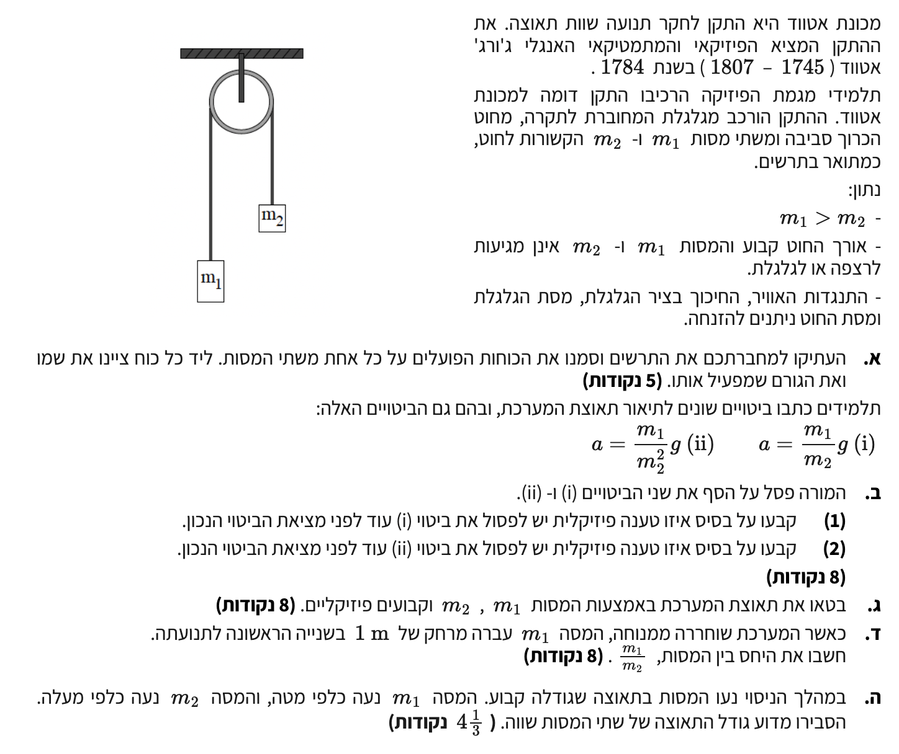

שאלה זו עוסקת במערכת המכונה "מכונת אטווד" - שני גופים הקשורים בחוט העובר על פני גלגלת. זהו מקרה קלאסי של תנועה צמודה המאפשר לנו לנתח כוחות וקינמטיקה של גופים שונים המקיימים ביניהם קשר.
דרך העבודה המומלצת בשאלות מסוג זה היא לנתח את הכוחות הפועלים על כל גוף בנפרד (תרשים כוחות מלא), לכתוב עבור כל גוף את משוואת החוק השני של ניוטון, ולאחר מכן לחבר את המשוואות כדי לבודד את התאוצה - תוך ניצול העובדה שהכוחות הפנימיים (כמו המתיחות בחוט) מצטמצמים.

נוסחאות ועקרונות בשימוש:
כאשר מבקשים במפורש להעתיק את התרשים למחברת, חשוב לשרטט את המערכת המלאה (גלגלת, חוט ומסות) ולצייר את וקטורי הכוח הפועלים על הגופים השונים על גבי הציור עצמו.
כדי לבנות את המשוואות בצורה מדויקת, כדאי להפריד כל גוף למערכת צירים עצמאית משלו:
נבחן את ממדי היחידות של ביטוי (ii). הביטוי הוא:
היחידות של מסה הן ק"ג (\( \text{kg} \)), ושל \( g \) הן \( \text{m/s}^2 \). נציב את היחידות:
קיבלנו יחידות שאינן תואמות ליחידות של תאוצה. לכן ניתן לפסול את ביטוי (ii) מיד על בסיס ניתוח ממדים.
נבחן את ביטוי (i) על ידי הצבת מקרי קצה. הביטוי הוא:
אם נניח מקרה שבו שתי המסות שוות, \( m_1 = m_2 \). במצב זה המערכת מאוזנת ותאוצתה צריכה להיות אפס. אך לפי הביטוי המוצע:
יתרה מכך, אם ניקח מצב בו \( m_1 \) גדולה משמעותית מ-\( m_2 \) (למשל \( m_1 = 3 m_2 \)), נקבל \( a = 3g \). זהו מצב בלתי אפשרי פיזיקלית במכונת אטווד, שכן התאוצה המקסימלית האפשרית כאשר גוף מושך את המערכת היא תאוצת הנפילה החופשית \( g \). על בסיס טענות אלו נפסול את (i).
נוסחאות ועקרונות בשימוש:
נגדיר ציר חיובי עבור כל גוף בכיוון התנועה שלו. מסה \( m_1 \) נעה מטה (נגדיר מטה כחיובי עבורה), ומסה \( m_2 \) נעה מעלה (נגדיר מעלה כחיובי עבורה). שניהם נעים באותה תאוצה \( a \) מאחר והם קשורים באותו חוט מתוח שאורכו קבוע.
המשוואה עבור גוף 1:
המשוואה עבור גוף 2:
כעת, נחבר את שתי המשוואות באופן אלגברי. כוח המתיחות \( T \) שווה בגודלו ומהווה כוח פנימי במערכת הכוללת, ולכן הוא מצטמצם בעת החיבור:
נוסחאות ועקרונות בשימוש:
נשתמש במשוואת מקום-זמן עבור תנועתה של המסה \( m_1 \). נציב את הנתונים (\( v_0 = 0 \text{ m/s}, \Delta x = 1 \text{ m}, t = 1 \text{ s} \)):
כעת נציב את התאוצה שמצאנו אל תוך הביטוי שפיתחנו בסעיף ג', ונזכור כי תאוצת הכובד היא תמיד חיובית \( g = 10 \text{ m/s}^2 \):
נחלק את שני האגפים ב-10 ונכפול במכנה המשותף:
נעביר את האיברים הכוללים את \( m_1 \) לצד אחד, ואת \( m_2 \) לצד שני:
שתי המסות קשורות זו לזו באמצעות חוט משותף העובר דרך גלגלת. אחד הנתונים הקריטיים בשאלה (שאף הופיע בפתיח) הוא כי אורך החוט קבוע, והחוט נשאר מתוח במהלך כל התנועה.
משמעות הדבר היא שמדובר ב"אילוץ קינמטי": בכל פרק זמן \( \Delta t \), כל מרחק שבו מסה \( m_1 \) יורדת כלפי מטה, בהכרח שווה למרחק שמסה \( m_2 \) חייבת לעלות כלפי מעלה. אם העתקיהן שווים בכל רגע ורגע, נובע מכך שגודל מהירותן שווה בכל רגע ורגע.
מכיוון שתאוצה היא קצב שינוי המהירות, ואם גודל המהירויות משתנה באופן זהה עבור שתי המסות, אזי גם גודל התאוצה שלהן חייב להיות שווה.
על כל אחד מהגופים פועלים בדיוק שני כוחות: כוח הכבידה כלפי מטה, וכוח מתיחות החוט כלפי מעלה.
סעיף ב'
(i) \( a = \frac{m_1}{m_2}g \)
(ii) \( a = \frac{m_1}{m_2^2}g \)
סעיף ג'
סעיף ד'
מסה \( m_1 \) עברה מרחק של 1 מטר (\( \Delta x = 1 \text{ m} \)) בשנייה הראשונה לתנועתה (\( t = 1 \text{ s} \)).
סעיף ה'